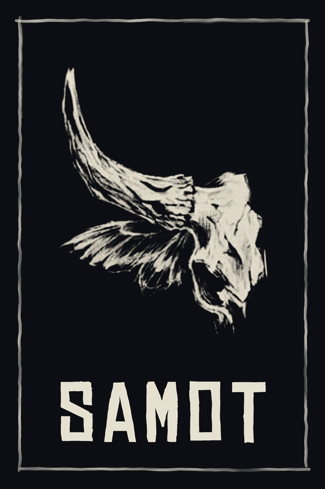

SAMOT
ТВОЙ МИР · ТВОЯ ИГРА · ТВОЙ ЛАУНЧЕР
Экосистема дистрибуции игр и ПО. Один установщик у игрока, один манифест у разработчика, никакой возни с обновлениями — SAMOT делает это сам.
Windows 10 и новее · бесплатно · исходный код открыт
Экосистема SAMOT
SAMOT Launcher
Домашний лаунчер для игроков: несколько игр и программ в одном окне, новости прямо в приложении, карусель баннеров на главной.
- Автообновление игры и клиента
- Новости и баннеры проекта
- Несколько проектов в одном окне
SAMOT Admin
Панель администратора и разработчика: проекты и роли, новости, баннеры, баны игроков, аналитика, публикация обновлений клиента.
- Всё управление без SQL и кода
- Публикация обновления клиента для всех
- Аналитика устройств и выгрузка CSV
SAMOT Packager
Утилита для разработчиков: выбирает папку игры, пакует файлы в паки с SHA-256, собирает манифест и инструкцию для GitHub Release.
- Релиз игры вместо часа возни
- Автоопределение точки входа (.exe)
- Портативный .exe, 72 МБ
Доведено до ума
Скачиваются только изменённые файлы — паки и послойная проверка SHA-256. Новая версия игры без перекачки всей библиотеки.
Оборвалась связь или перезапустился лаунчер — загрузка продолжается с того же байта, а не с нуля.
Каждый файл сверяется по SHA-256; отсутствующие и битые перекачиваются автоматически, точечно.
Патчноты, анонсы и баннеры прямо в лаунчере — игрок узнаёт о событии без внешних соцсетей.
SAMOT Launcher открывает все ваши проекты из одной библиотеки: переключение в сайдбаре, у каждого свой прогресс и запуск.
Клиент, админка и база схемы — в открытых репозиториях. Никакой магии: видно, что и куда отправляется.
Наши собственные игры
Мы строим SAMOT не только как платформу. Внутри уже готовятся собственные игры — они будут распространяться через SAMOT Launcher, а обновления будут прилетать сами.
Ваша игра внутри SAMOT — за пару вечеров
1. Соберите игру
Скачайте SAMOT Packager → выберите папку игры → «Собрать релиз». Папка game-dist с паками и манифестом готова.
2. Залейте на GitHub
Прикрепите содержимое game-dist к релизу с тегом vX.Y.Z — игра окажется в вашем корпоративном репозитории.
3. Укажите манифест
В админке → «📦 Релиз и манифест»: владелец, репозиторий, тег, вставьте manifest.json. Игроки получат игру по кнопке.
SAMOT для Windows
Установщики подписаны самоподписанным сертификатом SAMOT — при первом запуске Windows SmartScreen может показать предупреждение. Исходный код открыт: samot-launcher · samot-admin